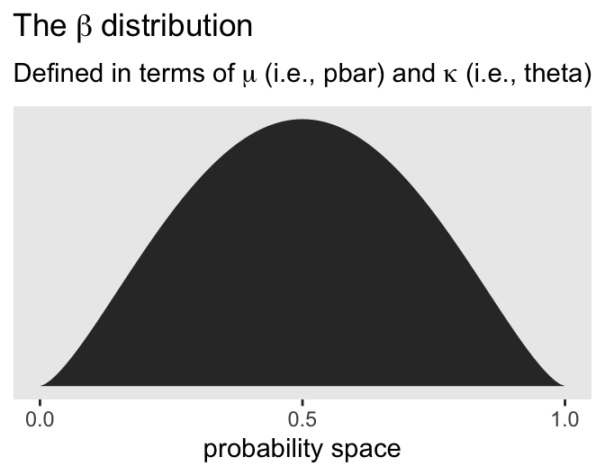

# Load
library(tidyverse)
library(tidybayes)
library(rstan)
library(loo)
library(patchwork)
library(posterior)
library(GGally) # for `ggpairs()`
# Drop grid lines
theme_set(
theme_gray() +
theme(panel.grid = element_blank())
)12 Monsters and Mixtures
Load the packages.
12.1 Over-dispersed counts
12.1.1 Beta-binomial.
Here’s how we might plot the beta distribution, as discussed in McElreath’s R code 12.1. Note our use of the rethinking::dbeta2() function, which is parameterized in terms of prob (i.e., the mean, \(\alpha / (\alpha + \beta)\)) and theta (i.e., the concentration, \(\alpha + \beta\)).
pbar <- 0.5
theta <- 5
tibble(x = seq(from = 0, to = 1, by = 0.01)) |>
mutate(y = rethinking::dbeta2(x = x, prob = pbar, theta = theta)) |>
ggplot(aes(x = x, y = y)) +
geom_area() +
scale_x_continuous("probability space", breaks = 0:2 / 2) +
scale_y_continuous(NULL, breaks = NULL) +
ggtitle(expression(The~beta~distribution),
subtitle = expression("Defined in terms of "*mu*" (i.e., pbar) and "*kappa*" (i.e., theta)"))
In his (2015) text, Doing Bayesian data analysis, Kruschke provided code for a convenience function that takes pbar and theta as inputs and returns the corresponding \(\alpha\) and \(\beta\) values. Here’s the function:
beta_a_b_from_mean_kappa <- function(mean, kappa) {
if (mean <= 0 | mean >= 1) stop("Must have 0 < `mean` < 1.")
if (kappa <= 0) stop("`kappa` must be > 0.")
a <- mean * kappa
b <- (1.0 - mean) * kappa
list(a = a, b = b)
}Now we can use the beta_a_b_from_mean_kappa() function to find the \(\alpha\) and \(\beta\) values corresponding to McElreath’s pbar and theta.
beta_a_b_from_mean_kappa(mean = pbar, kappa = theta)$a
[1] 2.5
$b
[1] 2.5And finally, we can double check that all of this works. Here’s the same distribution but defined in terms of \(\alpha\) and \(\beta\).
tibble(x = seq(from = 0, to = 1, by = 0.01)) |>
mutate(y = dbeta(x = x, shape1 = 2.5, shape2 = 2.5)) |>
ggplot(aes(x = x, y = y)) +
geom_area() +
scale_x_continuous("probability space", breaks = 0:2 / 2) +
scale_y_continuous(NULL, breaks = NULL) +
ggtitle(expression(The~beta~distribution),
subtitle = expression("This time defined in terms of "*alpha*" and "*beta))McElreath encouraged us to “explore different values for pbar and theta” (p. 371). Here’s a grid of plots with \(\bar p \in \{0.25, 0.5, 0.75 \}\) and \(\theta \in \{5, 15, 30 \}\).
# Data
crossing(pbar = c(0.25, 0.5, 0.75),
theta = c(5, 15, 30)) |>
expand_grid(x = seq(from = 0, to = 1, length.out = 301)) |>
mutate(density = rethinking::dbeta2(x = x, prob = pbar, theta = theta),
mu = str_c("mu==", pbar),
kappa = factor(str_c("kappa==", theta),
levels = str_c("kappa==", c(30, 15, 5)))) |>
# plot
ggplot(aes(x = x, y = density)) +
geom_area() +
scale_x_continuous("probability space",
breaks = 0:2 / 2, labels = c(0, 0.5, 1)) +
scale_y_continuous(NULL, breaks = NULL) +
facet_grid(kappa ~ mu, labeller = label_parsed)The statistical model we’ll be fitting follows the form
\[ \begin{align*} \text{admit}_i & \sim \operatorname{BetaBinomial}(n_i, \bar p_i, \theta) \\ \operatorname{logit}(\bar p_i) & = \alpha_{\text{gid}[i]} \\ \alpha_j & \sim \operatorname{Normal}(0, 1.5) \\ \theta & = \phi + 2 \\ \phi & \sim \operatorname{Exponential}(1), \end{align*} \]
where \(n\) is defined in the applications column in the data, and \(\alpha_\text{gid}\) means we’ll be fitting separate intercepts by the two levels of our gender index gid. On page 317 of the text, McElreath explained why we’d work with \(\phi\), and from whence came its relation with \(\theta\).
Here we load the UCBadmit data and then make our stan_data.
data(UCBadmit, package = "rethinking")
d <- UCBadmit |>
rownames_to_column("i") |>
mutate(gid = ifelse(applicant.gender == "male", "1", "2"))
rm(UCBadmit)
stan_data <- d |>
mutate(gid = ifelse(applicant.gender == "male", "1", "2")) |>
select(admit, applications, gid) |>
compose_data()
# What?
str(stan_data)List of 5
$ admit : int [1:12(1d)] 512 89 353 17 120 202 138 131 53 94 ...
$ applications: int [1:12(1d)] 825 108 560 25 325 593 417 375 191 393 ...
$ gid : num [1:12(1d)] 1 2 1 2 1 2 1 2 1 2 ...
$ n_gid : int 2
$ n : int 12Our model_code_12.1 shows some complications McElreath glossed over in the text. Before we get into the bigger complications, first note how we defined phi in the parameters block, and then defined theta in terms of phi in the transformed parameters below. We also defined a vector of pbar values, which are just \(\operatorname{logit}(\alpha_{\text{gid}[i]})^{-1}\). These will come in handy for the posterior-predictive check in Figure 12.1. But they’ll also come in handy for another reason we’ll describe next.
The larger complications in our model_code_12.1 come into play when we get to the likelihood within the model block. In the statistical formula above, which is based on McElreath’s statistical formula on page 371 in the text, we defined the beta-binomial likelihood in terms of \(\bar p\) and \(\theta\). This is also how McElreath parameterized the dbetabinom() function in the rethinking package. Stan, however, parameterizes the beta_binomial() likelihood in terms of the canonical \(\alpha\) and \(\beta\) parameters. See the Beta-binomial distribution section in the Stan Functions Reference for the technical details. This means we need to transform our \(\bar p\) and \(\theta\) parameters into \(\alpha\) and \(\beta\). We defined that vector of pbar values as a preliminary step. We can then define alpha and beta in terms of pbar and theta, which are
\[ \begin{align} \alpha & = \bar p \theta, \\ \beta & = (1 - \bar p) \theta. \end{align} \]
Then after all that, we can define the beta-binomial likelihood for admit with the beta_binomial() function in terms of alpha and beta.
model_code_12.1 <- '
data {
int<lower=1> n;
int<lower=1> n_gid;
array[n] int applications;
array[n] int gid;
array[n] int admit;
}
parameters {
vector[n_gid] a;
real<lower=0> phi;
}
transformed parameters {
real theta;
theta = phi + 2;
vector[n] pbar;
pbar = inv_logit(a[gid]);
}
model {
vector[n] alpha;
vector[n] beta;
alpha = pbar * theta;
beta = (1 - pbar) * theta;
admit ~ beta_binomial(applications, alpha, beta);
a ~ normal(0, 1.5);
phi ~ exponential(1);
}
'
m12.1 <- stan(
model_code = model_code_12.1,
data = stan_data,
cores = 4, seed = 12)Check the model summary.
print(m12.1, pars = c("a", "phi", "theta"), probs = c(0.055, 0.945))Inference for Stan model: anon_model.
4 chains, each with iter=2000; warmup=1000; thin=1;
post-warmup draws per chain=1000, total post-warmup draws=4000.
mean se_mean sd 5.5% 94.5% n_eff Rhat
a[1] -0.43 0.01 0.41 -1.08 0.21 3237 1
a[2] -0.33 0.01 0.41 -0.98 0.33 3116 1
phi 1.04 0.01 0.80 0.10 2.51 3737 1
theta 3.04 0.01 0.80 2.10 4.51 3737 1
Samples were drawn using NUTS(diag_e) at Sun Aug 18 15:49:54 2024.
For each parameter, n_eff is a crude measure of effective sample size,
and Rhat is the potential scale reduction factor on split chains (at
convergence, Rhat=1).Here’s the summary for the \(\alpha_1 - \alpha_2\) contrast, what McElreath called da.
# Extract the posterior draws
post <- as_draws_df(m12.1)
post |>
mean_qi(`a[1]` - `a[2]`, .width = 0.89) |>
mutate_if(is.double, round, digits = 3)# A tibble: 1 × 6
`\`a[1]\` - \`a[2]\`` .lower .upper .width .point .interval
<dbl> <dbl> <dbl> <dbl> <chr> <chr>
1 -0.103 -1.00 0.824 0.89 mean qi Much like in the text, the difference between genders on admission rates is near zero, with wide uncertainty intervals spanning in either direction.
Here’s the left panel of Figure 12.1.
set.seed(12)
# For the 100 lines
p1 <- post |>
mutate(p_bar = plogis(`a[2]`)) |>
slice_sample(n = 100) |>
select(.draw, p_bar, theta) |>
expand_grid(x = seq(from = 0, to = 1, length.out = 201)) |>
mutate(density = rethinking::dbeta2(x = x, prob = p_bar, theta = theta)) |>
ggplot(aes(x = x, y = density)) +
geom_line(aes(group = .draw),
alpha = 0.2, linewidth = 0.25) +
# For the line of the mean parameters
stat_function(fun = rethinking::dbeta2,
args = list(prob = mean(plogis(post$`a[2]`)),
theta = mean(post$theta)),
linewidth = 1.5, n = 201) +
labs(subtitle = "Distribution of female admission rates",
x = "probability admit") +
coord_cartesian(ylim = c(0, 3))
p1Here’s one way to make the right panel of Figure 12.1, and then combine it with the left panel, above, to display the full figure. Note our use of the pbar[i] vector in spread_draws().
p2 <- spread_draws(m12.1, pbar[i], theta) |>
left_join(d |>
mutate(i = as.integer(i)),
by = join_by(i)) |>
mutate(admit = rethinking::rbetabinom(n = n(), size = applications, prob = pbar, theta = theta)) |>
ggplot(aes(x = gid)) +
stat_pointinterval(aes(y = admit / applications),
point_interval = mean_qi, .width = 0.89,
linewidth = 1, shape = 1) +
geom_point(data = d,
aes(y = admit / applications),
color = "blue", size = 2.5) +
scale_x_discrete("case", labels = c("m", "f")) +
scale_y_continuous("admit", limits = 0:1) +
labs(subtitle = "Posterior validation check") +
facet_wrap(~ dept, nrow = 1)
# Combine
p1 | p2As in the text, the raw data are consistent with the prediction intervals. But those intervals are so incredibly wide, they’re hardly an endorsement of the model. Once we learn about hierarchical models, we’ll be able to do much better.
12.1.2 Negative-binomial or gamma-Poisson.
We might express the gamma-Poisson (negative binomial) as
\[y_i \sim \operatorname{Gamma-Poisson}(\lambda, \phi),\]
where \(\lambda\) is the mean or rate, and \(\alpha\) is the dispersion or scale.
Let’s load the Kline data to help get a sense of how this works.
data(Kline, package = "rethinking")
d <- Kline |>
mutate(i = 1:n(),
cid = ifelse(contact == "high", "2", "1"))
rm(Kline)
# What?
print(d) culture population contact total_tools mean_TU i cid
1 Malekula 1100 low 13 3.2 1 1
2 Tikopia 1500 low 22 4.7 2 1
3 Santa Cruz 3600 low 24 4.0 3 1
4 Yap 4791 high 43 5.0 4 2
5 Lau Fiji 7400 high 33 5.0 5 2
6 Trobriand 8000 high 19 4.0 6 2
7 Chuuk 9200 high 40 3.8 7 2
8 Manus 13000 low 28 6.6 8 1
9 Tonga 17500 high 55 5.4 9 2
10 Hawaii 275000 low 71 6.6 10 1If you take a look at McElreath’s m12.2, you’ll see it’s a gamma-Poisson version of the non-linear model m11.11 he fit back in Section 11.2.1.1. We can describe this new version of the model as
\[ \begin{align*} \text{total-tools}_i & \sim \operatorname{Gamma-Poisson} (\lambda_i, \phi) \\ \lambda_i & = \exp (\alpha_{\text{cid}[i]}) \text{population}_i^{\beta_\text{cid}[i]} / \gamma \\ \alpha_j & \sim \operatorname{Normal}(1, 1) \\ \beta_j & \sim \operatorname{Exponential}(1) \\ \gamma & \sim \operatorname{Exponential}(1) \\ \phi & \sim \operatorname{Exponential}(1). \end{align*} \]
Make the d_pred data for the predictions we’ll display in the plot.
d_pred <- tibble(
population = seq(from = 0, to = 3e5, length.out = 101) |>
as.integer()) |>
expand_grid(cid = 1:2) |>
mutate(i = 1:n())
# What?
glimpse(d_pred)Rows: 202
Columns: 3
$ population <int> 0, 0, 3000, 3000, 6000, 6000, 9000, 9000, 12000, 12000, 150…
$ cid <int> 1, 2, 1, 2, 1, 2, 1, 2, 1, 2, 1, 2, 1, 2, 1, 2, 1, 2, 1, 2,…
$ i <int> 1, 2, 3, 4, 5, 6, 7, 8, 9, 10, 11, 12, 13, 14, 15, 16, 17, …Make the stan_data.
stan_data <- d |>
mutate(population = as.double(population)) |>
select(total_tools, population, cid) |>
compose_data(population_pred = d_pred$population,
cid_pred = d_pred$cid,
n_pred = nrow(d_pred))
# What?
str(stan_data)List of 8
$ total_tools : int [1:10(1d)] 13 22 24 43 33 19 40 28 55 71
$ population : num [1:10(1d)] 1100 1500 3600 4791 7400 ...
$ cid : num [1:10(1d)] 1 1 1 2 2 2 2 1 2 1
$ n_cid : int 2
$ n : int 10
$ population_pred: int [1:202] 0 0 3000 3000 6000 6000 9000 9000 12000 12000 ...
$ cid_pred : int [1:202] 1 2 1 2 1 2 1 2 1 2 ...
$ n_pred : int 202Define model_code_12.2. Note that in Stan, the gamma-Poisson likelihood is called neg_binomial_2().
model_code_12.2 <- '
data {
int<lower=1> n;
int<lower=1> n_cid;
array[n] int cid;
vector[n] population;
array[n] int<lower=0> total_tools;
// For predictions
int<lower=1> n_pred;
array[n_pred] int cid_pred;
vector[n_pred] population_pred;
}
parameters {
vector[n_cid] a;
vector<lower=0>[n_cid] b;
real<lower=0> g;
real<lower=0> phi;
}
transformed parameters {
vector[n] lambda;
lambda = exp(a[cid]) .* population^b[cid] / g;
}
model {
total_tools ~ neg_binomial_2(lambda, phi);
a ~ normal(1, 1);
b ~ exponential(1);
g ~ exponential(1);
phi ~ exponential(1);
}
generated quantities {
vector[n] log_lik;
vector[n_pred] lambda_pred;
for (i in 1:n) log_lik[i] = neg_binomial_2_lpmf(total_tools[i] | lambda[i], phi);
lambda_pred = exp(a[cid_pred]) .* population_pred^b[cid_pred] / g;
}
'Sample from the posteriors.
m12.2 <- stan(
data = stan_data,
model_code = model_code_12.2,
cores = 4, seed = 12)Here is the model summary.
print(m12.2, pars = c("a", "b", "g", "phi"), probs = c(0.055, 0.945))Inference for Stan model: anon_model.
4 chains, each with iter=2000; warmup=1000; thin=1;
post-warmup draws per chain=1000, total post-warmup draws=4000.
mean se_mean sd 5.5% 94.5% n_eff Rhat
a[1] 0.92 0.02 0.83 -0.41 2.21 2117 1
a[2] 1.04 0.02 0.94 -0.44 2.57 2283 1
b[1] 0.25 0.00 0.10 0.10 0.40 1910 1
b[2] 0.26 0.00 0.13 0.06 0.47 1760 1
g 1.08 0.02 0.86 0.19 2.69 1895 1
phi 3.69 0.03 1.58 1.55 6.56 2382 1
Samples were drawn using NUTS(diag_e) at Sun Aug 18 15:50:22 2024.
For each parameter, n_eff is a crude measure of effective sample size,
and Rhat is the potential scale reduction factor on split chains (at
convergence, Rhat=1).Compute and check the PSIS-LOO estimates along with their diagnostic \(k\) values.
l12.2 <- extract_log_lik(m12.2) |> loo()
print(l12.2)
Computed from 4000 by 10 log-likelihood matrix.
Estimate SE
elpd_loo -41.4 1.7
p_loo 1.2 0.2
looic 82.7 3.3
------
MCSE of elpd_loo is 0.0.
MCSE and ESS estimates assume independent draws (r_eff=1).
All Pareto k estimates are good (k < 0.7).
See help('pareto-k-diagnostic') for details.“All Pareto k estimates are good!”
Here’s the LOO comparison between the original Poisson model, and our new gamma-Poisson.
loo_compare(l11.11, l12.2) |>
print(simplify = FALSE) elpd_diff se_diff elpd_loo se_elpd_loo p_loo se_p_loo looic se_looic
model1 0.0 0.0 -40.6 6.0 5.5 1.9 81.3 12.0
model2 -0.7 5.7 -41.4 1.7 1.2 0.2 82.7 3.3 Not much difference in this case. Here’s how we might make Figure 12.2.
# For the `k`-sized points
d_k <- d |>
mutate(p = l11.11$diagnostics$pareto_k,
gp = l12.2$diagnostics$pareto_k) |>
pivot_longer(p:gp, values_to = "k") |>
mutate(likelihood = factor(name, levels = c("p", "gp"),
labels = c("Poisson", "Gamma-Poisson")))
# Wrangle the posterior draws
bind_rows(
spread_draws(m11.11, lambda_pred[i]),
spread_draws(m12.2, lambda_pred[i])
) |>
left_join(d_pred, by = join_by(i)) |>
mutate(likelihood = rep(c("p", "gp"), each = n() / 2) |>
factor(levels = c("p", "gp"), labels = c("Poisson", "Gamma-Poisson")),
cid = as.character(cid)) |>
rename(total_tools = lambda_pred) |>
# Plot!
ggplot(aes(x = population, y = total_tools,
color = cid, fill = cid, group = cid)) +
stat_lineribbon(.width = 0.89, point_interval = mean_qi,
alpha = 1/4) +
geom_point(data = d_k,
aes(size = k)) +
scale_x_continuous("population", breaks = c(0, 50000, 150000, 250000),
labels = scales::comma(c(0, 50000, 150000, 250000))) +
scale_color_viridis_d(option = "A", end = 0.6) +
scale_fill_viridis_d(option = "A", end = 0.6) +
scale_size_continuous(range = c(0.1, 5)) +
ylab("total tools") +
coord_cartesian(xlim = range(d$population),
ylim = c(0, 80)) +
facet_wrap(~ likelihood) +
theme(legend.position = "none")12.1.3 Over-dispersion, entropy, and information criteria.
12.1.3.1 Overthinking: Continuous mixtures.
12.2 Zero-inflated outcomes
12.2.0.1 Rethinking: Breaking the law.
12.2.1 Example: Zero-inflated Poisson.
Do you remember the monk data from back in Section 11.2.3? Here we simulate some more. This time we’ll work in a little alcohol.
# Define parameters
prob_drink <- 0.2 # 20% of days
rate_work <- 1 # Average 1 manuscript per day
# Sample one year of production
n <- 365
# Simulate days monks drink
set.seed(365)
d <- tibble(drink = rbinom(n = n, size = 1, prob = prob_drink)) |>
# Simulate manuscripts completed
mutate(y = (1 - drink) * rpois(n = n, lambda = rate_work))
# What?
glimpse(d)Rows: 365
Columns: 2
$ drink <int> 0, 0, 0, 0, 0, 0, 0, 1, 0, 0, 0, 0, 0, 0, 1, 1, 1, 1, 0, 1, 0, 0…
$ y <dbl> 1, 0, 1, 0, 0, 0, 1, 0, 0, 1, 0, 1, 1, 2, 0, 0, 0, 0, 0, 0, 2, 0…Here’s a version of Figure 12.3, right.
d |>
ggplot(aes(x = y, fill = factor(drink, levels = 1:0))) +
geom_bar() +
scale_fill_viridis_d(end = 0.6, breaks = NULL) +
xlab("Manuscripts completed")With these data, the likelihood of observing zero on y, (i.e., the likelihood zero manuscripts were completed on a given occasion) is
\[ \begin{align*} \Pr (0 \mid p, \lambda) & = \Pr(\text{drink} \mid p) + \Pr(\text{work} \mid p) \times \Pr(0 \mid \lambda) \\ & = p + (1 - p) \exp (- \lambda). \end{align*} \]
And
since the Poisson likelihood of \(y\) is \(\Pr (y \mid \lambda) = \lambda^y \exp (- \lambda) / y!\), the likelihood of \(y = 0\) is just \(\exp (- \lambda)\). The above is just the mathematics for:
The probability of observing a zero is the probability that the monks didn’t drink OR (\(+\)) the probability that the monks worked AND (\(\times\)) failed to finish anything.
And the likelihood of a non-zero value \(y\) is:
\[\Pr (y \mid y > 0, p, \lambda) = \Pr (\text{drink} \mid p) (0) + \Pr (\text{work} \mid p) \Pr (y \mid \lambda) = (1 - p) \frac {\lambda^y \exp (- \lambda)}{y!}\]
Since drinking monks never produce \(y > 0\), the expression above is just the chance the monks both work \(1 - p\), and finish \(y\) manuscripts. (pp. 377–378, emphasis in the original)
So letting \(p\) be the probability \(y\) is zero and \(\lambda\) be the shape of the distribution, the zero-inflated Poisson (\(\operatorname{ZIPoisson}\)) regression model might take the basic form
\[ \begin{align*} y_i & \sim \operatorname{ZIPoisson}(p_i, \lambda_i) \\ \operatorname{logit}(p_i) & = \alpha_p + \beta_p x_i \\ \log (\lambda_i) & = \alpha_\lambda + \beta_\lambda x_i, \end{align*} \]
where both parameters in the likelihood, \(p_i\) and \(\lambda_i\) might get their own statistical model, making this a special case of what Bürkner (2022) calls distributional models.
Make the stan_data.
stan_data <- d |>
compose_data()
# What?
str(stan_data)List of 3
$ drink: int [1:365(1d)] 0 0 0 0 0 0 0 1 0 0 ...
$ y : num [1:365(1d)] 1 0 1 0 0 0 1 0 0 1 ...
$ n : int 365Now we make model_code_12.3. Based on the Vectorizing mixtures section of the Stan User’s Guide, it looks like there is no way to express a zero-inflated model (or any other mixture model) with the vectorized notation. You must use a for loop of some kind.
model_code_12.3 <- '
data {
int<lower=1> n;
array[n] int y;
}
parameters {
real ap;
real al;
}
model {
// Convert the parameters to their natural scales,
// for notational convenience
real p;
real lambda;
p = inv_logit(ap);
lambda = exp(al);
// Here is the likelihood
for (i in 1:n) {
if (y[i] == 0)
target += log_mix(p, 0, poisson_lpmf(0 | lambda));
if (y[i] > 0)
target += log1m(p) + poisson_lpmf(y[i] | lambda);
}
ap ~ normal(-1.5, 1);
al ~ normal(1, 0.5);
}
'For proper attribution, this model_code is a thinly-veiled version of Arel-Bundock’s work. Now sample from the posterior with stan().
m12.3 <- stan(
data = stan_data,
model_code = model_code_12.3,
cores = 4, seed = 12)Check the model summary.
print(m12.3, probs = c(0.055, 0.945))Inference for Stan model: anon_model.
4 chains, each with iter=2000; warmup=1000; thin=1;
post-warmup draws per chain=1000, total post-warmup draws=4000.
mean se_mean sd 5.5% 94.5% n_eff Rhat
ap -1.28 0.01 0.36 -1.92 -0.79 1282 1
al 0.01 0.00 0.09 -0.14 0.15 1251 1
lp__ -438.66 0.03 1.04 -440.69 -437.67 1341 1
Samples were drawn using NUTS(diag_e) at Sun Aug 18 15:51:57 2024.
For each parameter, n_eff is a crude measure of effective sample size,
and Rhat is the potential scale reduction factor on split chains (at
convergence, Rhat=1).Here are the posterior means and CIs for \(\lambda\) and \(p\), on their natural scales.
as_draws_df(m12.3) |>
transmute(p = plogis(ap),
lambda = exp(al)) |>
pivot_longer(everything(), names_to = "parameter") |>
group_by(parameter) |>
mean_qi(.width = 0.89)# A tibble: 2 × 7
parameter value .lower .upper .width .point .interval
<chr> <dbl> <dbl> <dbl> <dbl> <chr> <chr>
1 lambda 1.02 0.872 1.16 0.89 mean qi
2 p 0.224 0.128 0.312 0.89 mean qi 12.2.1.1 Overthinking: Zero-inflated Poisson calculations in Stan.
We just did that!
12.3 Ordered categorical outcomes
12.3.1 Example: Moral intuition.
Let’s get the Trolley data (see Cushman et al., 2006).
data(Trolley, package = "rethinking")
d <- Trolley
rm(Trolley)Use glimpse() to get a sense of the dimensions of the data.
glimpse(d)Rows: 9,930
Columns: 12
$ case <fct> cfaqu, cfbur, cfrub, cibox, cibur, cispe, fkaqu, fkboa, fkbo…
$ response <int> 4, 3, 4, 3, 3, 3, 5, 4, 4, 4, 4, 4, 4, 5, 4, 4, 4, 4, 4, 3, …
$ order <int> 2, 31, 16, 32, 4, 9, 29, 12, 23, 22, 27, 19, 14, 3, 18, 15, …
$ id <fct> 96;434, 96;434, 96;434, 96;434, 96;434, 96;434, 96;434, 96;4…
$ age <int> 14, 14, 14, 14, 14, 14, 14, 14, 14, 14, 14, 14, 14, 14, 14, …
$ male <int> 0, 0, 0, 0, 0, 0, 0, 0, 0, 0, 0, 0, 0, 0, 0, 0, 0, 0, 0, 0, …
$ edu <fct> Middle School, Middle School, Middle School, Middle School, …
$ action <int> 0, 0, 0, 0, 0, 0, 1, 1, 1, 1, 1, 1, 1, 0, 0, 0, 0, 0, 1, 1, …
$ intention <int> 0, 0, 0, 1, 1, 1, 0, 0, 0, 0, 0, 0, 0, 0, 0, 0, 0, 0, 1, 1, …
$ contact <int> 1, 1, 1, 1, 1, 1, 0, 0, 0, 0, 0, 0, 0, 0, 0, 0, 0, 0, 0, 0, …
$ story <fct> aqu, bur, rub, box, bur, spe, aqu, boa, box, bur, car, spe, …
$ action2 <int> 1, 1, 1, 1, 1, 1, 1, 1, 1, 1, 1, 1, 1, 0, 0, 0, 0, 0, 1, 1, …Though we have 9,930 rows, we only have 331 unique individuals.
d |>
summarise(n = n_distinct(id)) n
1 33112.3.2 Describing an ordered distribution with intercepts.
Make our version of the simple Figure 12.4 histogram of our primary variable, response.
p1 <- d |>
ggplot(aes(x = response)) +
geom_bar(width = 1/4) +
scale_x_continuous(breaks = 1:7)
p1Our cumulative proportion plot, Figure 12.4.b, will require some pre-plot wrangling.
p2 <- d |>
count(response) |>
mutate(pr_k = n / nrow(d),
cum_pr_k = cumsum(pr_k)) |>
ggplot(aes(x = response, y = cum_pr_k)) +
geom_line() +
geom_point(fill = "grey92", shape = 21, size = 2) +
scale_x_continuous(breaks = 1:7) +
scale_y_continuous("cumulative proportion", breaks = 0:2 / 2) +
coord_cartesian(ylim = 0:1)
p2Then to re-describe the histogram as log-cumulative odds, we’ll need a series of intercept parameters. Each intercept will be on the log-cumulative-odds scale and stand in for the cumulative probability of each outcome. So this is just the application of the link function. The log-cumulative-odds that a response value \(y_i\) is equal-to-or-less-than some possible outcome value \(k\) is:
\[\log \frac{\Pr(y_i \leq k)}{1 - \Pr(y_i \leq k)} = \alpha_k\]
where \(\alpha_k\) is an “intercept” unique to each possible outcome value \(k\). (p. 383)
For Figure 12.4., we can compute the \(\alpha_k\) estimates with the base-R qlogis() function, rather than using McElreath’s custom logit() function.
p3 <- d |>
count(response) |>
mutate(cum_pr_k = cumsum(n / nrow(d))) |>
mutate(alpha = qlogis(cum_pr_k)) |>
filter(response < 7) |>
ggplot(aes(x = response, y = alpha)) +
geom_line() +
geom_point(fill = "grey92", shape = 21, size = 2) +
scale_x_continuous(breaks = 1:7, limits = c(1, 7)) +
ylab("log-cumulative-odds")
p3Why not combine the three subplots with patchwork?
(p1 | p2 | p3) +
plot_annotation(title = "Re-describing a discrete distribution using log-cumulative-odds.")The code for Figure 12.5 is itself something of a monster.
d |>
count(response) |>
mutate(pr_k = n / nrow(d),
cum_pr_k = cumsum(n / nrow(d))) |>
mutate(discrete_probability = ifelse(response == 1, cum_pr_k, cum_pr_k - pr_k)) |>
ggplot(aes(x = response, y = cum_pr_k)) +
geom_line() +
geom_point(fill = "grey92", shape = 21, size = 2) +
geom_linerange(aes(ymin = 0, ymax = cum_pr_k),
color = "gray40") +
geom_linerange(aes(ymin = ifelse(response == 1, 0, discrete_probability),
ymax = cum_pr_k),
color = "blue", position = position_nudge(x = 0.1)) +
annotate(geom = "text",
x = 4.3, y = 0.565,
label = "discrete probability",
angle = 270, color = "blue", hjust = 0, size = 3) +
annotate(geom = "text",
x = 3.8, y = 0,
label = "cumulative probability",
angle = 90, color = "gray40", hjust = 0, size = 3) +
scale_x_continuous(breaks = 1:7) +
scale_y_continuous("cumulative proportion", breaks = 0:2 / 2)A compact way to express the formula for this first type of statistical model is
\[ \begin{align*} \text{response}_i & \sim \operatorname{Categorical} (\mathbf p) \\ \operatorname{logit}(p_k) & = \alpha_k - \phi \\ \phi & = 0 \\ \alpha_k & \sim \operatorname{Normal}(0, 1.5), \end{align*} \]
where the \(\alpha_k\) term denotes the \(K - 1\) intercepts (cut points or thresholds) we use to describe each possible outcome value \(k\) and. The mysterious looking \(\phi\) term is a stand-in for the potential terms of the linear model. In the case where we have no predictors, it’s just 0. Just hold on to your hats; this will make more sense in the next section.
An ordered-logit distribution is really just a categorical distribution that takes a vector \(\mathbf p = \{p_1, p_2, p_3, p_4, p_5, p_6\}\) of probabilities of each response value below the maximum response (7 in this example). Each response value \(k\) in this vector is defined by its link to an intercept parameter, \(\alpha_k\). Finally, some weakly regularizing priors are placed on these intercepts. (p. 385)
Make the stan_data.
stan_data <- d |>
select(response, action, intention, contact) |>
compose_data(n_response = n_distinct(response))
# What?
str(stan_data)List of 6
$ response : int [1:9930(1d)] 4 3 4 3 3 3 5 4 4 4 ...
$ action : int [1:9930(1d)] 0 0 0 0 0 0 1 1 1 1 ...
$ intention : int [1:9930(1d)] 0 0 0 1 1 1 0 0 0 0 ...
$ contact : int [1:9930(1d)] 1 1 1 1 1 1 0 0 0 0 ...
$ n : int 9930
$ n_response: int 7Define model_code_12.4. I learned the syntax for this kind of model from this post on the Stan forums.
model_code_12.4 <- '
data {
int<lower=1> n;
int<lower=1> n_response; // This is k
array[n] int<lower=1, upper=n_response> response;
}
parameters {
ordered[n_response - 1] cutpoint;
}
model {
vector[n] phi = rep_vector(0, n);
response ~ ordered_logistic(phi, cutpoint);
cutpoint ~ normal(0, 1.5);
}
'Sample with stan().
m12.4 <- stan(
data = stan_data,
model_code = model_code_12.4,
cores = 4, seed = 12)Check the model summary.
print(m12.4, pars = "cutpoint", probs = c(0.055, 0.945))Inference for Stan model: anon_model.
4 chains, each with iter=2000; warmup=1000; thin=1;
post-warmup draws per chain=1000, total post-warmup draws=4000.
mean se_mean sd 5.5% 94.5% n_eff Rhat
cutpoint[1] -1.92 0 0.03 -1.96 -1.87 2734 1
cutpoint[2] -1.27 0 0.02 -1.30 -1.23 3717 1
cutpoint[3] -0.72 0 0.02 -0.75 -0.68 4341 1
cutpoint[4] 0.25 0 0.02 0.22 0.28 4543 1
cutpoint[5] 0.89 0 0.02 0.85 0.92 4248 1
cutpoint[6] 1.77 0 0.03 1.72 1.81 4749 1
Samples were drawn using NUTS(diag_e) at Sun Aug 18 15:52:39 2024.
For each parameter, n_eff is a crude measure of effective sample size,
and Rhat is the potential scale reduction factor on split chains (at
convergence, Rhat=1).We can convert the cutpoint posteriors to cumulative probabilities with plogis().
m12.4 |>
spread_draws(cutpoint[k]) |>
mutate(cum_p = plogis(cutpoint)) |>
mean_qi(cum_p, .width = 0.89)# A tibble: 6 × 7
k cum_p .lower .upper .width .point .interval
<int> <dbl> <dbl> <dbl> <dbl> <chr> <chr>
1 1 0.128 0.123 0.134 0.89 mean qi
2 2 0.220 0.213 0.226 0.89 mean qi
3 3 0.328 0.320 0.335 0.89 mean qi
4 4 0.562 0.554 0.569 0.89 mean qi
5 5 0.709 0.702 0.716 0.89 mean qi
6 6 0.854 0.849 0.860 0.89 mean qi 12.3.3 Adding predictor variables.
Now we define the generic linear model as \(\phi_i = \beta x_i\). Accordingly, the formula for our cumulative logit model becomes
\[ \begin{align*} \log \frac{\Pr(y_i \leq k)}{1 - \Pr(y_i \leq k)} & = \alpha_k - \phi_i \\ \phi_i & = \beta x_i. \end{align*} \]
This form automatically ensures the correct ordering of the outcome values, while still morphing the likelihood of each individual value as the predictor \(x_i\) changes value. Why is the linear model \(\phi\) subtracted from each intercept? Because if we decrease the log-cumulative-odds of every outcome value \(k\) below the maximum, this necessarily shifts probability mass upwards towards higher outcome values. So then positive values of \(\beta\) mean increasing \(x\) also increases the mean \(y\). You could add \(\phi\) instead like \(\alpha_k + \phi_i\). But then \(\beta > 0\) would indicate increasing \(x\) decreases the mean. (p. 386)
Here’s a version of McElreath’s rethinking::dordlogit() function. You can find the original code for dordlogit() from McElreath’s GitHub repo for rethinking. We’ll call our version d_ord_logit().
d_ord_logit <- function(x, phi, a, log = FALSE) {
a <- c(as.numeric(a), Inf)
p <- plogis(a[x] - phi)
na <- c(-Inf, a)
np <- plogis(na[x] - phi)
p <- p - np
if (log == TRUE) p <- log(p)
p
}Our d_ord_logit() function works like this.
p_k <- m12.4 |>
spread_draws(cutpoint[k]) |>
summarise(cutpoint = mean(cutpoint)) |>
pull() |>
d_ord_logit(x = 1:7, phi = 0)
# What?
print(p_k)[1] 0.12823369 0.09159923 0.10785636 0.23394015 0.14727085 0.14550889 0.14559082Next, as McElreath further noted on page 338, “these probabilities imply an average outcome of:”
tibble(k = 1:7,
p_k = p_k) |>
summarise(average_outcome = sum(p_k * k))# A tibble: 1 × 1
average_outcome
<dbl>
1 4.20Now we’ll try it by subtracting 0.5 from each.
p_k <- m12.4 |>
spread_draws(cutpoint[k]) |>
# Here's the change
summarise(cutpoint = mean(cutpoint - 0.5)) |>
pull() |>
d_ord_logit(x = 1:7, phi = 0)
# What?
print(p_k)[1] 0.08191055 0.06405010 0.08221264 0.20910330 0.15901792 0.18438150 0.21932400# The average
tibble(k = 1:7,
p_k = p_k) |>
summarise(average_outcome = sum(p_k * k))# A tibble: 1 × 1
average_outcome
<dbl>
1 4.73So the rule is we subtract the linear model from each intercept. “This way, a positive \(\beta\) value indicates that an increase in the predictor variable \(x\) results in an increase in the average response” (p. 387). As to our upcoming model, we might express the statistical formula as
\[ \begin{align*} \text{response}_i & \sim \operatorname{Categorical} (\mathbf p) \\ \text{logit}(p_k) & = \alpha_k - \phi_i \\ \phi_i & = \beta_1 \text{action}_i + \beta_2 \text{contact}_i + (\beta_3 + \beta_4 \text{action}_i + \beta_5 \text{contact}_i) \text{intention}_i \\ \alpha_k & \sim \operatorname{Normal}(0, 1.5) \\ \beta_1, \dots, \beta_5 & \sim \operatorname{Normal}(0, 0.5), \end{align*} \]
where, because we have included predictors, \(\phi\) is no longer set to 0. Using our skills from back in Chapter 8, we might also rewrite the linear model for \(\phi\) as
\[\phi_i = \beta_1 \text{action}_i + \beta_2 \text{contact}_i + \beta_3 \text{intention}_i + \beta_4 (\text{action}_i \times \text{intention}_i) + \beta_5 (\text{contact}_i \times \text{intention}_i).\]
Before we fit the model, we’ll want to make a data frame with predictor values for the pp-check in Figure 12.6.
d_pred <- d |>
distinct(action, contact, intention) |>
mutate(i = 1:n())
# What?
glimpse(d_pred)Rows: 6
Columns: 4
$ action <int> 0, 0, 1, 0, 1, 0
$ contact <int> 1, 1, 0, 0, 0, 0
$ intention <int> 0, 1, 0, 0, 1, 1
$ i <int> 1, 2, 3, 4, 5, 6Update the stan_data to include the elements from d_pred.
stan_data <- d |>
select(response, action, intention, contact) |>
compose_data(n_response = n_distinct(response),
# For the predictions
n_pred = nrow(d_pred),
action_pred = d_pred$action,
contact_pred = d_pred$contact,
intention_pred = d_pred$intention)
# What?
str(stan_data)List of 10
$ response : int [1:9930(1d)] 4 3 4 3 3 3 5 4 4 4 ...
$ action : int [1:9930(1d)] 0 0 0 0 0 0 1 1 1 1 ...
$ intention : int [1:9930(1d)] 0 0 0 1 1 1 0 0 0 0 ...
$ contact : int [1:9930(1d)] 1 1 1 1 1 1 0 0 0 0 ...
$ n : int 9930
$ n_response : int 7
$ n_pred : int 6
$ action_pred : int [1:6] 0 0 1 0 1 0
$ contact_pred : int [1:6] 1 1 0 0 0 0
$ intention_pred: int [1:6] 0 1 0 0 1 1Now we define model_code_12.5. Note how we’re adding a generated quantities block for the pp-check.
model_code_12.5 <- '
data {
int<lower=1> n;
int<lower=1> n_response; // This is k
vector[n] action;
vector[n] contact;
vector[n] intention;
array[n] int<lower=1, upper=n_response> response;
// For predictions
int<lower=1> n_pred;
vector[n_pred] action_pred;
vector[n_pred] contact_pred;
vector[n_pred] intention_pred;
}
parameters {
ordered[n_response - 1] cutpoint;
real bA;
real bI;
real bC;
real bIA;
real bIC;
}
model {
vector[n] BI;
vector[n] phi;
BI = bI + bIA * action + bIC * contact;
phi = bA * action + bC * contact + BI .* intention;
response ~ ordered_logistic(phi, cutpoint);
cutpoint ~ normal(0, 1.5);
[bA, bI, bC, bIA, bIC] ~ normal(0, 0.5);
}
generated quantities {
vector[n_pred] BI;
vector[n_pred] phi;
BI = bI + bIA * action_pred + bIC * contact_pred;
phi = bA * action_pred + bC * contact_pred + BI .* intention_pred;
array[n_pred] int<lower=1, upper=n_response> response_pred;
for (i in 1:n_pred)
response_pred[i] = ordered_logistic_rng(phi[i], cutpoint);
}
'Sample from the conditional ordinal model with stan().
m12.5 <- stan(
data = stan_data,
model_code = model_code_12.5,
cores = 4, seed = 12)Behold the model summary.
print(m12.5,
pars = c("cutpoint", "bA", "bI", "bC", "bIA", "bIC"),
probs = c(0.055, 0.945))Inference for Stan model: anon_model.
4 chains, each with iter=2000; warmup=1000; thin=1;
post-warmup draws per chain=1000, total post-warmup draws=4000.
mean se_mean sd 5.5% 94.5% n_eff Rhat
cutpoint[1] -2.63 0 0.05 -2.71 -2.55 1843 1
cutpoint[2] -1.94 0 0.05 -2.01 -1.86 1875 1
cutpoint[3] -1.34 0 0.05 -1.42 -1.27 1806 1
cutpoint[4] -0.31 0 0.04 -0.38 -0.24 1846 1
cutpoint[5] 0.36 0 0.04 0.29 0.43 1990 1
cutpoint[6] 1.27 0 0.05 1.19 1.34 2176 1
bA -0.47 0 0.05 -0.56 -0.39 1945 1
bI -0.29 0 0.06 -0.38 -0.20 1784 1
bC -0.34 0 0.07 -0.45 -0.24 2198 1
bIA -0.43 0 0.08 -0.56 -0.30 2250 1
bIC -1.23 0 0.10 -1.39 -1.08 2066 1
Samples were drawn using NUTS(diag_e) at Sun Aug 18 15:53:47 2024.
For each parameter, n_eff is a crude measure of effective sample size,
and Rhat is the potential scale reduction factor on split chains (at
convergence, Rhat=1).Here are the \(\beta\) coefficients in a coefficient plot.
as_draws_df(m12.5) |>
pivot_longer(cols = bA:bIC) |>
ggplot(aes(x = value, y = name)) +
stat_pointinterval(.width = 0.89, linewidth = 1/2, shape = 1) +
labs(x = "posterior",
y = NULL)Here’s how we can make the top row of Figure 12.6.
# For the sample statistics
d_cum_p <- d |>
group_by(intention, contact, action) |>
count(response) |>
mutate(probability = cumsum(n / sum(n))) |>
filter(response < 7)
# For `expand_grid()`
nd <- d |>
count(action, contact, intention)
set.seed(12) # To make `slice_sample()` reproducible
# Wrangle the posterior draws
as_draws_df(m12.5) |>
slice_sample(n = 50) |>
expand_grid(nd) |>
pivot_longer(starts_with("cutpoint"), values_to = "alpha") |>
mutate(k = str_extract(name, "\\d")) |>
mutate(BI = bI + bIA * action + bIC * contact) |>
mutate(phi = bA * action + bC * contact + BI * intention) |>
mutate(log_cum_odds = alpha - phi) |>
select(.draw, action:intention, k, log_cum_odds) |>
mutate(probability = plogis(log_cum_odds)) |>
# Plot
ggplot(aes(x = intention, y = probability)) +
geom_line(aes(group = interaction(.draw, k)),
alpha = 1/4, linewidth = 1/4) +
geom_point(data = d_cum_p,
color = "blue") +
scale_x_continuous("intention", breaks = 0:1) +
scale_y_continuous(breaks = c(0, .5, 1), limits = 0:1) +
facet_wrap(~ action + contact, labeller = label_both)Here’s how we might make the bottom row of Figure 12.6 using the response_pred posteriors from the generated quantities block.
set.seed(12) # To make `ndraws` reproducible
m12.5 |>
spread_draws(response_pred[i],
ndraws = 1000) |>
left_join(d_pred, by = join_by(i)) |>
mutate(response = response_pred,
intention = factor(intention)) |>
ggplot(aes(x = response, fill = intention)) +
geom_bar(position = position_dodge(width = 0.6), width = 0.6) +
scale_x_continuous(breaks = 1:7) +
scale_fill_manual(values = c("gray60", "blue")) +
ylim(0, NA) +
facet_wrap(~ action + contact, labeller = label_both)12.3.3.1 Rethinking: Staring into the abyss.
12.4 Ordered categorical predictors
We can handle ordered outcome variables using a categorical model with a cumulative link. That was the previous section. What about ordered predictor variables? We could just include them as continuous predictors like in any linear model. But this isn’t ideal. Just like with ordered outcomes, we don’t really want to assume that the distance between each ordinal value is the same. Luckily, we don’t have to. (p. 391)
Here are the eight levels of edu.
distinct(d, edu) edu
1 Middle School
2 Bachelor's Degree
3 Some College
4 Master's Degree
5 High School Graduate
6 Graduate Degree
7 Some High School
8 Elementary SchoolMcElreath defined his edu_new variable with an impressively compact couple lines of code. Here we’ll take a slightly different approach saving it as a factor with defined levels.
edu_levels_vec <- c("Elementary School", "Middle School", "Some High School", "High School Graduate",
"Some College", "Bachelor's Degree", "Master's Degree", "Graduate Degree")
d <- d |>
mutate(edu_new = factor(edu, levels = edu_levels_vec))
# What did we do?
d |>
distinct(edu, edu_new) |>
arrange(edu_new) edu edu_new
1 Elementary School Elementary School
2 Middle School Middle School
3 Some High School Some High School
4 High School Graduate High School Graduate
5 Some College Some College
6 Bachelor's Degree Bachelor's Degree
7 Master's Degree Master's Degree
8 Graduate Degree Graduate DegreeThe prior often used to handle monotonic effects is the Dirichlet distribution. The Dirichlet distribution is the multivariate extension of the beta distribution, which we met back in Section 12.1.1. Here we follow McElreath’s R code 12.32 to simulate a few draws from the Dirichlet distribution.
set.seed(1805)
delta <- gtools::rdirichlet(10, alpha = rep(2, times = 7))
# What?
str(delta) num [1:10, 1:7] 0.1053 0.2504 0.1917 0.1241 0.0877 ...Plot delta with ggplot().
delta |>
data.frame() |>
set_names(1:7) |>
mutate(row = 1:n()) |>
pivot_longer(-row, names_to = "index") |>
ggplot(aes(x = index, y = value, group = row,
alpha = row == 3, color = row == 3)) +
geom_line() +
geom_point() +
scale_alpha_manual(values = c(1/4, 1), breaks = NULL) +
scale_color_viridis_d(option = "A", end = 0.6, breaks = NULL) +
ylab("probability")Update the stan_data to include edu_new and an alpha vector for the prior. Note how the compose_data() function converts the edu_new factor levels to the correct integer values.
stan_data <- d |>
select(response, action, intention, contact, edu_new) |>
compose_data(n_response = n_distinct(response),
alpha = rep(2, times = 7)) # delta prior
# What?
str(stan_data)List of 9
$ response : int [1:9930(1d)] 4 3 4 3 3 3 5 4 4 4 ...
$ action : int [1:9930(1d)] 0 0 0 0 0 0 1 1 1 1 ...
$ intention : int [1:9930(1d)] 0 0 0 1 1 1 0 0 0 0 ...
$ contact : int [1:9930(1d)] 1 1 1 1 1 1 0 0 0 0 ...
$ edu_new : num [1:9930(1d)] 2 2 2 2 2 2 2 2 2 2 ...
$ n_edu_new : int 8
$ n : int 9930
$ n_response: int 7
$ alpha : num [1:7] 2 2 2 2 2 2 2Now we define model_code_12.6. Although we can vectorize the ordered_logistic() likelihood for response, I’m not aware we can vectorize the phi model containing the new bE * sum(delta_j[1:edu_new[i]]) portion. One way or another, it looks like that requires a for loop. For more on why, see this thread on the Stan forums.
model_code_12.6 <- '
data {
int<lower=1> n;
int<lower=1> n_response;
int<lower=1> n_edu_new;
vector[n] action;
vector[n] contact;
vector[n] intention;
array[n] int edu_new;
array[n] int<lower=1, upper=n_response> response;
vector[n_edu_new - 1] alpha;
}
parameters {
ordered[n_response - 1] kappa;
real bE;
real bA;
real bI;
real bC;
simplex[n_edu_new - 1] delta;
}
model {
vector[n] phi;
vector[n_edu_new] delta_j;
delta_j = append_row(0, delta);
for (i in 1:n) phi[i] = bE * sum(delta_j[1:edu_new[i]]) + bA * action[i] + bC * contact[i] + bI * intention[i];
response ~ ordered_logistic(phi, kappa);
kappa ~ normal(0, 1.5);
delta ~ dirichlet(alpha);
[bE, bA, bI, bC] ~ normal(0, 1);
}
'Sample from the conditional ordinal model with stan().
m12.6 <- stan(
data = stan_data,
model_code = model_code_12.6,
chains = 4, cores = 4, seed = 12)In the text (p. 394), McElreath remarked it took about 20 minutes to fit this model in his computer. Using my 2023 M2-chip MacBook Pro, it took just under 4 minutes. Mind you, our rstan defaults to twice the number of warmup and post-warmup draws. If an when you can, try to vectorize your likelihood functions, friends.
Behold the model summary.
print(m12.6, probs = c(0.055, 0.945))Inference for Stan model: anon_model.
4 chains, each with iter=2000; warmup=1000; thin=1;
post-warmup draws per chain=1000, total post-warmup draws=4000.
mean se_mean sd 5.5% 94.5% n_eff Rhat
kappa[1] -3.07 0.00 0.14 -3.31 -2.86 1797 1
kappa[2] -2.39 0.00 0.14 -2.63 -2.18 1780 1
kappa[3] -1.81 0.00 0.14 -2.05 -1.60 1797 1
kappa[4] -0.79 0.00 0.14 -1.03 -0.58 1789 1
kappa[5] -0.12 0.00 0.14 -0.35 0.09 1806 1
kappa[6] 0.79 0.00 0.14 0.55 1.00 1809 1
bE -0.31 0.00 0.16 -0.57 -0.06 1745 1
bA -0.70 0.00 0.04 -0.77 -0.64 4256 1
bI -0.72 0.00 0.04 -0.78 -0.66 4810 1
bC -0.96 0.00 0.05 -1.03 -0.87 4024 1
delta[1] 0.23 0.00 0.14 0.05 0.48 2636 1
delta[2] 0.14 0.00 0.09 0.03 0.30 5169 1
delta[3] 0.19 0.00 0.11 0.05 0.39 4675 1
delta[4] 0.17 0.00 0.10 0.04 0.34 4026 1
delta[5] 0.04 0.00 0.05 0.01 0.12 1252 1
delta[6] 0.10 0.00 0.07 0.02 0.22 3313 1
delta[7] 0.13 0.00 0.08 0.03 0.26 4053 1
lp__ -18574.88 0.08 2.98 -18580.12 -18570.82 1496 1
Samples were drawn using NUTS(diag_e) at Sun Aug 18 15:57:04 2024.
For each parameter, n_eff is a crude measure of effective sample size,
and Rhat is the potential scale reduction factor on split chains (at
convergence, Rhat=1).We can visualize the \(\delta\) parameters in a version of Figure 12.8 with help from GGally::ggpairs().
m12.6 |>
spread_draws(delta[j]) |>
ungroup() |>
left_join(d |>
mutate(j = as.integer(edu_new) - 1L) |>
distinct(edu, edu_new, j),
by = join_by(j)) |>
select(.draw, edu, delta) |>
pivot_wider(names_from = edu, values_from = delta) |>
select(-.draw) |>
ggpairs(upper = list(continuous = wrap("cor", stars = FALSE)),
lower = list(continuous = wrap("points", alpha = 0.1, size = 0.1))) +
theme(strip.text = element_text(size = 7))
Now we prepare for the more conventional model m12.7. First add a normalized version of edu_new called edu_norm.
d <- d |>
mutate(edu_norm = (as.integer(edu_new) - 1) / 7)
# What does this look like?
d |>
distinct(edu, edu_new, edu_norm) |>
arrange(edu_new) edu edu_new edu_norm
1 Elementary School Elementary School 0.0000000
2 Middle School Middle School 0.1428571
3 Some High School Some High School 0.2857143
4 High School Graduate High School Graduate 0.4285714
5 Some College Some College 0.5714286
6 Bachelor's Degree Bachelor's Degree 0.7142857
7 Master's Degree Master's Degree 0.8571429
8 Graduate Degree Graduate Degree 1.0000000Next we update the stan_data to include edu_norm.
stan_data <- d |>
select(response, action, intention, contact, edu_norm) |>
compose_data(n_response = n_distinct(response))
# What?
str(stan_data)List of 7
$ response : int [1:9930(1d)] 4 3 4 3 3 3 5 4 4 4 ...
$ action : int [1:9930(1d)] 0 0 0 0 0 0 1 1 1 1 ...
$ intention : int [1:9930(1d)] 0 0 0 1 1 1 0 0 0 0 ...
$ contact : int [1:9930(1d)] 1 1 1 1 1 1 0 0 0 0 ...
$ edu_norm : num [1:9930(1d)] 0.143 0.143 0.143 0.143 0.143 ...
$ n : int 9930
$ n_response: int 7Define model_code_12.7.
model_code_12.7 <- '
data {
int<lower=1> n;
int<lower=1> n_response;
vector[n] action;
vector[n] contact;
vector[n] intention;
vector[n] edu_norm;
array[n] int<lower=1, upper=n_response> response;
}
parameters {
ordered[n_response - 1] kappa;
real bE;
real bA;
real bI;
real bC;
}
model {
vector[n] phi;
phi = bE * edu_norm + bA * action + bC * contact + bI * intention;
response ~ ordered_logistic(phi, kappa);
kappa ~ normal(0, 1.5);
[bE, bA, bI, bC] ~ normal(0, 1);
}
'Sample from the conditional ordinal model with stan().
m12.7 <- stan(
data = stan_data,
model_code = model_code_12.7,
chains = 4, cores = 4, seed = 12)Here’s a focused summary of the \(\beta\) coefficients.
print(m12.7, pars = c("bE", "bA", "bI", "bC"), probs = c(0.055, 0.945))Inference for Stan model: anon_model.
4 chains, each with iter=2000; warmup=1000; thin=1;
post-warmup draws per chain=1000, total post-warmup draws=4000.
mean se_mean sd 5.5% 94.5% n_eff Rhat
bE -0.10 0 0.09 -0.24 0.05 2885 1
bA -0.70 0 0.04 -0.77 -0.64 3837 1
bI -0.72 0 0.04 -0.77 -0.66 3976 1
bC -0.96 0 0.05 -1.04 -0.88 3721 1
Samples were drawn using NUTS(diag_e) at Sun Aug 18 15:58:20 2024.
For each parameter, n_eff is a crude measure of effective sample size,
and Rhat is the potential scale reduction factor on split chains (at
convergence, Rhat=1).12.5 Summary
Session info
sessionInfo()R version 4.4.0 (2024-04-24)
Platform: aarch64-apple-darwin20
Running under: macOS Ventura 13.4
Matrix products: default
BLAS: /Library/Frameworks/R.framework/Versions/4.4-arm64/Resources/lib/libRblas.0.dylib
LAPACK: /Library/Frameworks/R.framework/Versions/4.4-arm64/Resources/lib/libRlapack.dylib; LAPACK version 3.12.0
locale:
[1] en_US.UTF-8/en_US.UTF-8/en_US.UTF-8/C/en_US.UTF-8/en_US.UTF-8
time zone: America/Chicago
tzcode source: internal
attached base packages:
[1] stats graphics grDevices utils datasets methods base
other attached packages:
[1] GGally_2.2.1 posterior_1.6.0 patchwork_1.2.0 loo_2.8.0
[5] rstan_2.32.6 StanHeaders_2.32.7 tidybayes_3.0.6 lubridate_1.9.3
[9] forcats_1.0.0 stringr_1.5.1 dplyr_1.1.4 purrr_1.0.2
[13] readr_2.1.5 tidyr_1.3.1 tibble_3.2.1 ggplot2_3.5.1
[17] tidyverse_2.0.0
loaded via a namespace (and not attached):
[1] shape_1.4.6.1 gtable_0.3.5 tensorA_0.36.2.1
[4] xfun_0.43 QuickJSR_1.1.3 htmlwidgets_1.6.4
[7] processx_3.8.4 inline_0.3.19 lattice_0.22-6
[10] tzdb_0.4.0 ps_1.7.6 vctrs_0.6.5
[13] tools_4.4.0 generics_0.1.3 stats4_4.4.0
[16] curl_5.2.1 parallel_4.4.0 fansi_1.0.6
[19] cmdstanr_0.8.1 pkgconfig_2.0.3 Matrix_1.7-0
[22] checkmate_2.3.1 RColorBrewer_1.1-3 distributional_0.4.0
[25] RcppParallel_5.1.7 lifecycle_1.0.4 farver_2.1.1
[28] compiler_4.4.0 munsell_0.5.1 codetools_0.2-20
[31] htmltools_0.5.8.1 yaml_2.3.8 pillar_1.9.0
[34] MASS_7.3-60.2 arrayhelpers_1.1-0 rethinking_2.40
[37] abind_1.4-5 gtools_3.9.5 ggstats_0.6.0
[40] tidyselect_1.2.1 digest_0.6.35 svUnit_1.0.6
[43] mvtnorm_1.2-5 stringi_1.8.4 labeling_0.4.3
[46] fastmap_1.1.1 grid_4.4.0 colorspace_2.1-0
[49] cli_3.6.3 magrittr_2.0.3 pkgbuild_1.4.4
[52] utf8_1.2.4 withr_3.0.0 scales_1.3.0
[55] backports_1.5.0 timechange_0.3.0 rmarkdown_2.26
[58] matrixStats_1.3.0 gridExtra_2.3 hms_1.1.3
[61] coda_0.19-4.1 evaluate_0.23 knitr_1.46
[64] V8_4.4.2 ggdist_3.3.2 viridisLite_0.4.2
[67] rlang_1.1.4 Rcpp_1.0.12 glue_1.7.0
[70] rstudioapi_0.16.0 jsonlite_1.8.8 plyr_1.8.9
[73] R6_2.5.1
Comments